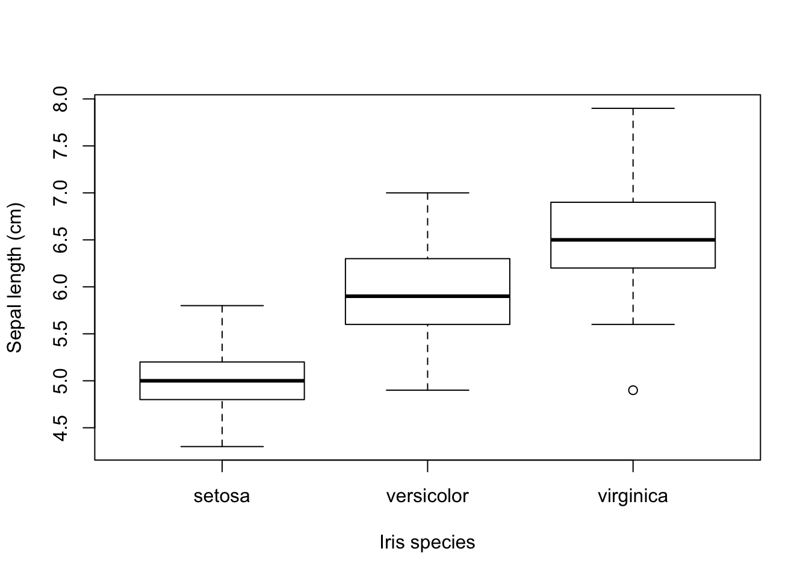

2.1 Dataframe Selections
R offers a wealth of methods to make selection on dataframes by columns, rows, or both.
We’ll explore the iris dataset, a dataframe holding morphological data on several species of plants from the genus Iris:
There are only three species in this dataset
##
## setosa versicolor virginica
## 50 50 50but how do they relate to each other with repect to Sepal length?

Now suppose I want to get the data from virginica plants that have a Sepal length smaller than the largest Sepal length of setosa plants? First of course we’ll need the maximum of the setosa plants:
## [1] 5.8Which plant is it? Let’s use the subset function to find out.
## Sepal.Length Sepal.Width Petal.Length Petal.Width Species
## 15 5.8 4 1.2 0.2 setosaNow filter out the virginica plants that have a Sepal length smaller than this value. I’ll show two approaches, one with logical indexing and one with subset
##get a logical for small plants
logi.small.sepal <- iris$Sepal.Length < max.setosa
logi.small.sepal## [1] TRUE TRUE TRUE TRUE TRUE TRUE TRUE TRUE TRUE TRUE TRUE
## [12] TRUE TRUE TRUE FALSE TRUE TRUE TRUE TRUE TRUE TRUE TRUE
## [23] TRUE TRUE TRUE TRUE TRUE TRUE TRUE TRUE TRUE TRUE TRUE
## [34] TRUE TRUE TRUE TRUE TRUE TRUE TRUE TRUE TRUE TRUE TRUE
## [45] TRUE TRUE TRUE TRUE TRUE TRUE FALSE FALSE FALSE TRUE FALSE
## [56] TRUE FALSE TRUE FALSE TRUE TRUE FALSE FALSE FALSE TRUE FALSE
## [67] TRUE FALSE FALSE TRUE FALSE FALSE FALSE FALSE FALSE FALSE FALSE
## [78] FALSE FALSE TRUE TRUE TRUE FALSE FALSE TRUE FALSE FALSE FALSE
## [89] TRUE TRUE TRUE FALSE FALSE TRUE TRUE TRUE TRUE FALSE TRUE
## [100] TRUE FALSE FALSE FALSE FALSE FALSE FALSE TRUE FALSE FALSE FALSE
## [111] FALSE FALSE FALSE TRUE FALSE FALSE FALSE FALSE FALSE FALSE FALSE
## [122] TRUE FALSE FALSE FALSE FALSE FALSE FALSE FALSE FALSE FALSE FALSE
## [133] FALSE FALSE FALSE FALSE FALSE FALSE FALSE FALSE FALSE FALSE FALSE
## [144] FALSE FALSE FALSE FALSE FALSE FALSE FALSE## [1] FALSE FALSE FALSE FALSE FALSE FALSE FALSE FALSE FALSE FALSE FALSE
## [12] FALSE FALSE FALSE FALSE FALSE FALSE FALSE FALSE FALSE FALSE FALSE
## [23] FALSE FALSE FALSE FALSE FALSE FALSE FALSE FALSE FALSE FALSE FALSE
## [34] FALSE FALSE FALSE FALSE FALSE FALSE FALSE FALSE FALSE FALSE FALSE
## [45] FALSE FALSE FALSE FALSE FALSE FALSE FALSE FALSE FALSE FALSE FALSE
## [56] FALSE FALSE FALSE FALSE FALSE FALSE FALSE FALSE FALSE FALSE FALSE
## [67] FALSE FALSE FALSE FALSE FALSE FALSE FALSE FALSE FALSE FALSE FALSE
## [78] FALSE FALSE FALSE FALSE FALSE FALSE FALSE FALSE FALSE FALSE FALSE
## [89] FALSE FALSE FALSE FALSE FALSE FALSE FALSE FALSE FALSE FALSE FALSE
## [100] FALSE TRUE TRUE TRUE TRUE TRUE TRUE TRUE TRUE TRUE TRUE
## [111] TRUE TRUE TRUE TRUE TRUE TRUE TRUE TRUE TRUE TRUE TRUE
## [122] TRUE TRUE TRUE TRUE TRUE TRUE TRUE TRUE TRUE TRUE TRUE
## [133] TRUE TRUE TRUE TRUE TRUE TRUE TRUE TRUE TRUE TRUE TRUE
## [144] TRUE TRUE TRUE TRUE TRUE TRUE TRUE## [1] FALSE FALSE FALSE FALSE FALSE FALSE FALSE FALSE FALSE FALSE FALSE
## [12] FALSE FALSE FALSE FALSE FALSE FALSE FALSE FALSE FALSE FALSE FALSE
## [23] FALSE FALSE FALSE FALSE FALSE FALSE FALSE FALSE FALSE FALSE FALSE
## [34] FALSE FALSE FALSE FALSE FALSE FALSE FALSE FALSE FALSE FALSE FALSE
## [45] FALSE FALSE FALSE FALSE FALSE FALSE FALSE FALSE FALSE FALSE FALSE
## [56] FALSE FALSE FALSE FALSE FALSE FALSE FALSE FALSE FALSE FALSE FALSE
## [67] FALSE FALSE FALSE FALSE FALSE FALSE FALSE FALSE FALSE FALSE FALSE
## [78] FALSE FALSE FALSE FALSE FALSE FALSE FALSE FALSE FALSE FALSE FALSE
## [89] FALSE FALSE FALSE FALSE FALSE FALSE FALSE FALSE FALSE FALSE FALSE
## [100] FALSE FALSE FALSE FALSE FALSE FALSE FALSE TRUE FALSE FALSE FALSE
## [111] FALSE FALSE FALSE TRUE FALSE FALSE FALSE FALSE FALSE FALSE FALSE
## [122] TRUE FALSE FALSE FALSE FALSE FALSE FALSE FALSE FALSE FALSE FALSE
## [133] FALSE FALSE FALSE FALSE FALSE FALSE FALSE FALSE FALSE FALSE FALSE
## [144] FALSE FALSE FALSE FALSE FALSE FALSE FALSE## Sepal.Length Sepal.Width Petal.Length Petal.Width Species
## 107 4.9 2.5 4.5 1.7 virginica
## 114 5.7 2.5 5.0 2.0 virginica
## 122 5.6 2.8 4.9 2.0 virginicaOf course, you will usually perform this selection in one statement, but the operations carried out by R will be exactly the same (but without creating any variables of course):
## Sepal.Length Sepal.Width Petal.Length Petal.Width Species
## 107 4.9 2.5 4.5 1.7 virginica
## 114 5.7 2.5 5.0 2.0 virginica
## 122 5.6 2.8 4.9 2.0 virginicaThe function subset will do the same behind the scenes, but your code may be more to your liking:
## Sepal.Length Sepal.Width Petal.Length Petal.Width Species
## 107 4.9 2.5 4.5 1.7 virginica
## 114 5.7 2.5 5.0 2.0 virginica
## 122 5.6 2.8 4.9 2.0 virginicaBy the way, beware to use only one boolean and: &, not &&. This will not give an error but only an empty result set
## [1] Sepal.Length Sepal.Width Petal.Length Petal.Width Species
## <0 rows> (or 0-length row.names)& and && indicate logical AND and | and || indicate logical OR. The shorter form performs elementwise comparisons in much the same way as arithmetic operators. The longer form evaluates left to right examining only the first element of each vector. Evaluation proceeds only until the result is determined. The longer form is appropriate for programming control-flow and typically preferred in if clauses.
Can you figure out why using && would give an empty set in the above case?
See The R manual for details.